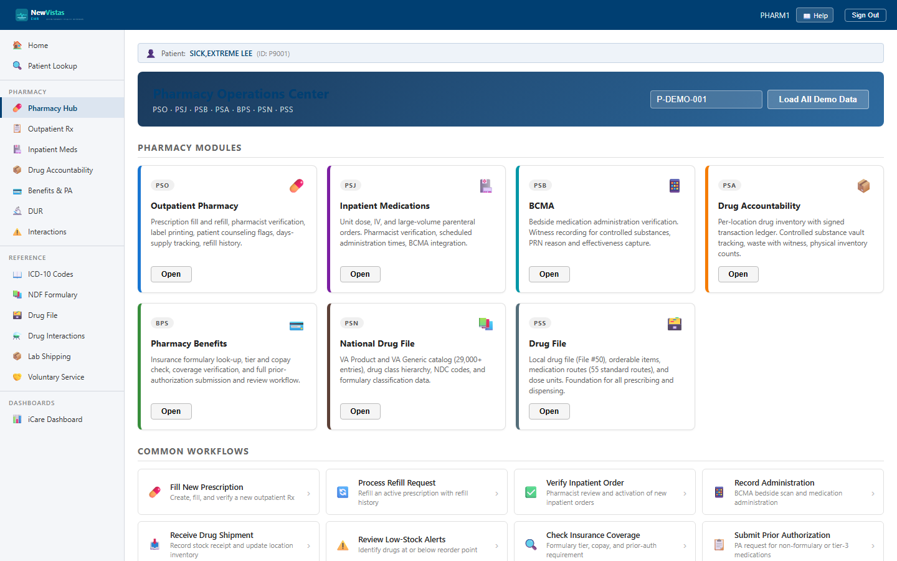

Pharmacy Hub
The Pharmacy Operations Center is the landing page for every pharmacy package. It gathers the seven VistA pharmacy modules — PSO, PSJ, PSB, PSA, BPS, PSN, and PSS — into a single set of cards, plus a grid of the common day-to-day workflows, so you can jump straight to the screen you need.
Open the Pharmacy Hub
- From the sidebar, open Pharmacy (or go to
/pharmacy). - The header reads Pharmacy Operations Center with the package line
PSO · PSJ · PSB · PSA · BPS · PSN · PSS. - Under Pharmacy Modules, click Open on any card to launch that module.
- Under Common Workflows, click any task row to go directly to the matching screen.

What you see
Pharmacy Modules
Each card carries its VistA package badge, an icon, a short description, and an Open button:
- PSO — Outpatient Pharmacy — fill, refill, pharmacist verification, label printing, counseling flags, days-supply tracking.
- PSJ — Inpatient Medications — unit dose, IV, and large-volume parenteral orders with BCMA integration.
- PSB — BCMA — bedside medication administration, witness recording, PRN reason and effectiveness capture.
- PSA — Drug Accountability — per-location inventory with a signed transaction ledger and vault tracking.
- BPS — Pharmacy Benefits — formulary look-up, tier and copay check, coverage, and prior-authorization review.
- PSN — National Drug File — the VA Product and VA Generic catalog, drug classes, and NDC codes.
- PSS — Drug File — the local drug file (File #50), orderable items, routes, and dose units.
Common Workflows
The workflow grid is a shortcut menu — each row pairs an icon with a task name and a one-line description (for example Fill New Prescription, Process Refill Request, Verify Inpatient Order, Receive Drug Shipment, Check Insurance Coverage, Submit Prior Authorization, and Controlled Substance Count). Clicking a row opens the same module as the matching card.
P-DEMO-001 for patient-specific modules.